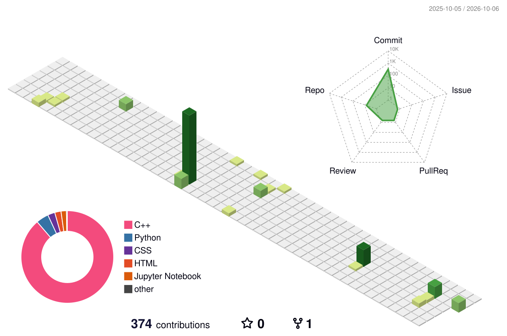

🤖 About Me
- 🎓 B.Sc. in Computer Science & Engineering, Daffodil International University — CGPA 3.68 / 4.0
- 🔬 Research Assistant @ DIU NLP & ML Research Lab — Bangla NLP and code-mixed text classification
- 📚 5× IEEE conference publications in machine learning and language technologies
- 👨🏫 Trained and mentored 250+ students as Bootcamp Trainer (50+) and Lab Prefect (200+)
- 🛠️ Building practical AI systems with Python, Scikit-learn, Hugging Face, OpenAI API, Django / FastAPI
- 📍 Dhaka, Bangladesh
📚 Publications
5 IEEE conference papers — full list on Google Scholar.
[1] "Bridging Classical and Colloquial Bangla: Using Large Language Models for Sadhu–Cholit Register Classification." — AISEI (IEEE), Irbid, Jordan, Apr. 2026 — DOI
[2] "Automatic Classification of Banglish and English Text Using TF-IDF and Machine Learning Models." — AISEI (IEEE), Irbid, Jordan, Apr. 2026 — DOI
[3] "A Comparative Study of LSTM and Bi-LSTM Architectures with Attention for Bangla News Classification." — IDAA, Dhaka, Bangladesh, Dec. 2025 — DOI
[4] "Efficient Bangla Tense Classification Using GRU, LSTM, and Bidirectional Approaches." — ECCE (IEEE), Chittagong, Bangladesh, Feb. 2025 — DOI
[5] "Enhancing Bangla Fake News Detection By Using A Deep Learning Approach." — ICCIT (IEEE), Cox's Bazar, Bangladesh, Dec. 2024 — DOI
💼 Experience & Leadership
Research Assistant — DIU NLP & ML Research Lab (Sep 2025 – Aug 2026) Conducting research on Bangla NLP and code-mixed text classification; preparing and analyzing datasets for ML/DL experiments; contributing to model development, evaluation and performance improvement.
Bootcamp Trainer — Basic Python to Machine Learning — DIU NLP & ML Research Lab (Oct 2025 – Apr 2026) Trained 50+ students in Python, data preprocessing and machine learning through practical sessions with Pandas, NumPy and Scikit-learn.
Lab Prefect — Data Structures & Programming — Daffodil International University (Jul 2023 – Apr 2025) Guided 200+ students in programming and problem-solving; evaluated assignments and provided debugging support.
Community — Volunteer, National Data Analytics Competition (NDAC 2025) · Contest Organizer, Crack Dataset (CD-2024) · Participant, Unlock the Algorithm 2023 & DIU Take Off 2022
🎓 Education
B.Sc. in Computer Science & Engineering — Daffodil International University, Dhaka (May 2022 – May 2026) CGPA: 3.68 / 4.0
Research interests
Relevant coursework — Machine Learning · Artificial Intelligence · Data Mining · Database Systems · Data Structures · Algorithms · Object-Oriented Programming · Natural Language Processing
🏆 Honors & Awards
3rd — DIU Capture The Flag Contest 2024 · Cyber Security Club 2nd — DIU CodeTrap Programming Contest 2023 · Software Engineering Club
⚙️ Tech Stack
🚀 Featured Projects
🇧🇩 Banglish vs. English Detector
NLP classification model that distinguishes Banglish from English text — built with Scikit-learn and reaching 99.31% accuracy, with a Streamlit dashboard for live prediction and model performance analysis. The approach behind it is published at IEEE AISEI 2026 (paper [2] above).
🧭 AI Search Visualizer
Interactive tool that visualizes A*, BFS, DFS and UCS pathfinding algorithms step by step — making heuristic search behavior visible and intuitive for learning and teaching.
🛒 Euzaar
Full-stack e-commerce platform built with Django, PostgreSQL and REST APIs — covering authentication, product management, order workflows and payment integration. Deployed and live at euzaar.com.
🧹 E-commerce Product Scraper
Web-scraping pipeline that collects product title, price, availability and rating, then exports clean, structured data to CSV for analysis and reuse.
🔐 Attack on Finances (AoF)
Network-security simulation that models attack scenarios against a simulated financial environment — exploring threat behavior, attack surfaces and defensive response. Skills proven in practice: 3rd place, DIU CTF 2024.
🌾 Smart Farming with IoT & AI Monitoring
IoT-driven smart-agriculture platform that streams field-sensor data into AI models for continuous crop-condition monitoring — data-driven decision-making for farming operations.
More on GitHub: Restaurant Manager · Rain Alert System · TourNTravel · Python Project
📊 GitHub Metrics
🛰️ Contribution Graph · 3D

Generated automatically by GitHub Actions — see .github/workflows/3d-contrib.yml. Run the workflow once and this section comes alive.
🐍 Contribution Snake

The snake eats your contributions — powered by .github/workflows/snake.yml. Run the workflow once to generate it.
🔗 Connect